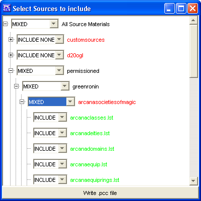

Using the Customize button from the Source Materials tab will open this window. Using this window you can create your own custom set of list files to use.
Using the +/- keys to expand or close the tree of source listing, you can select entire publisher groups, or just 1 single list file from a specific publisher.
When you have selected all the publishers/files you desire, click on the Write .pcc file button and the pcc will be created for you! You can now go back to the Source Material tab and select the pcc file you just made (It will appear under Custom Sources) and you are on your way!